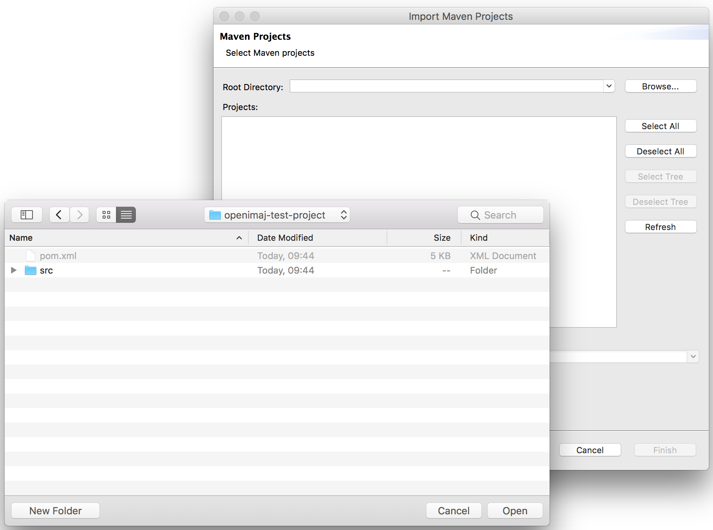
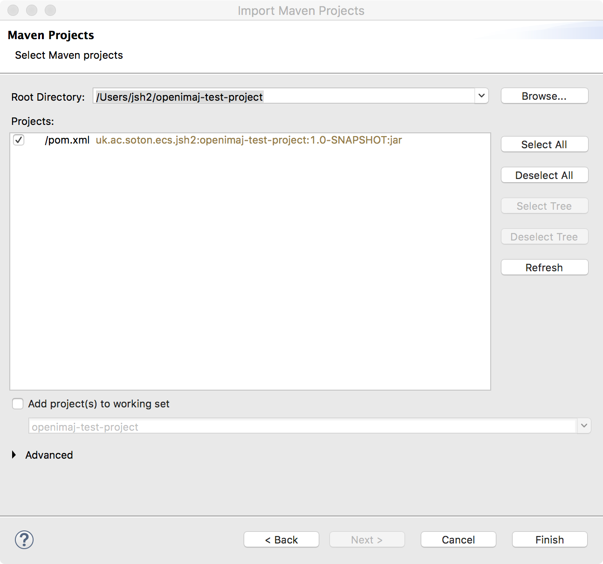

Chapter 1. Getting started with OpenIMAJ using Maven
Apache Maven is a project management tool. Maven performs tasks such
as automatic dependency management, project packaging and more. We
strongly encourage anyone using
OpenIMAJ to use Maven to get their own project started. We’ve even
provided a Maven archetype for
OpenIMAJ (basically a project template) that lets you get started
programming with OpenIMAJ quickly.
OpenIMAJ requires Maven 2 or 3; if you want to build OpenIMAJ from source you will need Maven 3. You can check if you
have Maven installed
already by opening a terminal (or DOS command prompt) and typing:
mvn -version
If Maven is found the, version will be printed. If the version is
less than 2.2.1, or Maven was not found, go to
http://maven.apache.org
to download and install it. Once you’ve installed Maven try the
above command to test that it is working.
To create a new OpenIMAJ project, run the following command:
mvn -DarchetypeGroupId=org.openimaj -DarchetypeArtifactId=openimaj-quickstart-archetype -DarchetypeVersion=1.3.6 archetype:generate
Maven will then prompt you for some input. For the groupId, enter
something that identifies you or a group that you belong to (for
example, I might choose uk.ac.soton.ecs.jsh2 for
personal projects, or org.openimaj for OpenIMAJ
sub-projects). For the artifactId enter a name
for your project (for example,
OpenIMAJ-Tutorial01). The version can be left as
1.0-SNAPSHOT, and the default package is also OK.
Finally enter Y and press return to confirm the
settings. Maven will then generate a new project in a directory with
the same name as the artifactId you provided.
The entire interaction with Maven should look something like this:
> mvn archetype:generate -DarchetypeGroupId=org.openimaj -DarchetypeArtifactId=openimaj-quickstart-archetype -DarchetypeVersion=1.3.6
[INFO] Scanning for projects...
[INFO]
[INFO] ------------------------------------------------------------------------
[INFO] Building Maven Stub Project (No POM) 1
[INFO] ------------------------------------------------------------------------
[INFO]
[INFO] >>> maven-archetype-plugin:3.0.0:generate (default-cli) > generate-sources @ standalone-pom >>>
[INFO]
[INFO] <<< maven-archetype-plugin:3.0.0:generate (default-cli) < generate-sources @ standalone-pom <<<
[INFO]
[INFO]
[INFO] --- maven-archetype-plugin:3.0.0:generate (default-cli) @ standalone-pom ---
[INFO] Generating project in Interactive mode
[INFO] Archetype repository not defined. Using the one from [org.openimaj:openimaj-quickstart-archetype:1.3.6] found in catalog remote
Define value for property 'groupId': uk.ac.soton.ecs.jsh2
Define value for property 'artifactId': openimaj-test-project
Define value for property 'version' 1.0-SNAPSHOT: :
Define value for property 'package' uk.ac.soton.ecs.jsh2: :
[INFO] Using property: openimajVersion = 1.3.6
Confirm properties configuration:
groupId: uk.ac.soton.ecs.jsh2
artifactId: openimaj-test-project
version: 1.0-SNAPSHOT
package: uk.ac.soton.ecs.jsh2
openimajVersion: 1.3.6
Y: :
[INFO] ----------------------------------------------------------------------------
[INFO] Using following parameters for creating project from Archetype: openimaj-quickstart-archetype:1.3.6
[INFO] ----------------------------------------------------------------------------
[INFO] Parameter: groupId, Value: uk.ac.soton.ecs.jsh2
[INFO] Parameter: artifactId, Value: openimaj-test-project
[INFO] Parameter: version, Value: 1.0-SNAPSHOT
[INFO] Parameter: package, Value: uk.ac.soton.ecs.jsh2
[INFO] Parameter: packageInPathFormat, Value: uk/ac/soton/ecs/jsh2
[INFO] Parameter: package, Value: uk.ac.soton.ecs.jsh2
[INFO] Parameter: version, Value: 1.0-SNAPSHOT
[INFO] Parameter: groupId, Value: uk.ac.soton.ecs.jsh2
[INFO] Parameter: openimajVersion, Value: 1.3.6
[INFO] Parameter: artifactId, Value: openimaj-test-project
[INFO] Project created from Archetype in dir: /Users/jsh2/openimaj-test-project
[INFO] ------------------------------------------------------------------------
[INFO] BUILD SUCCESS
[INFO] ------------------------------------------------------------------------
[INFO] Total time: 47.710 s
[INFO] Finished at: 2017-09-05T09:44:15+01:00
[INFO] Final Memory: 15M/221M
[INFO] ------------------------------------------------------------------------
>
![[Note]](images/note.png) |
Overriding the OpenIMAJ version |
|
Versions of the archetype after 1.0.5 automatically select the corresponding
OpenIMAJ version. With all versions of the archetype, you can override this
by setting the openimajVersion on the command-line with the -D argument.
|
The project directory contains a file called
pom.xml and a directory called
src. The pom.xml file
describes all of the dependencies of the project and also contains
instructions for packaging the project into a fat jar that contains
all your project code and resources together with the dependencies.
If you find that you need to add another library to your project,
you should do so by editing the pom.xml file and
adding a new dependency. The src directory
contains the code for your project. In particular,
src/main/java contains your java application code
and src/test/java contains unit tests.
The default project created by the archetype contains a small
“hello world” application. To compile and assemble the
“hello world” application you cd
into the project directory from the command line (replacing
OpenIMAJ-Tutorial01 with the name of your
project):
cd OpenIMAJ-Tutorial01
and run the command:
mvn assembly:assembly
This will create a new directory called target that contains the
assembled application jar (the assembled jar is the one whose name
ends with -jar-with-dependencies.jar). To run the application,
enter:
java -jar target/OpenIMAJ-Tutorial01-1.0-SNAPSHOT-jar-with-dependencies.jar
The application will then run, and a window should open displaying a
picture with the text “hello world”. Closing the
window, or ctrl-c on the command line, will quit the application.
1.1. Integration with your favourite IDE
We could now go ahead and start playing with the code in a text
editor, however this really isn’t recommended! Using a good
Integrated Development Environment (IDE) with auto-completion will
make your experience much better -- particularly when it comes to managing imports.
Maven integrates with all the popular IDEs. The OpenIMAJ
developers all use Eclipse
so that is what we’re most familiar with, however we should be
able to help getting it set up in a different IDE if you wish.
Integration with modern versions of Eclipse is quite simple, but you must have the Eclipse m2e plugin installed. If
you're using one of the standard "Eclipse for Java Developers" provided by the Eclipse project, then you should be all set.
Otherwise you'll first need to install the m2e plugin by following the instructions on the m2e website (http://www.eclipse.org/m2e/).
To import your Maven project from within Eclipse, select from the menu:
Choose Existing Maven Projects (inside the Maven folder):
In the dialog that appears, click the Browse... and navigate to your project directory, and click Open:

The project should now appear in the Import Maven Projects window:

Finally click Finish. The project will then appear in the
workspace and you’ll be able to look at the App.java file that was
generated by the archetype.
Once you’ve opened the App.java file in
Eclipse, you can right-click on it and select
> to run it from
within Eclipse.
![[Tip]](images/tip.png)